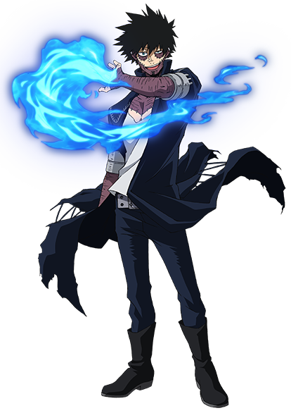

Dabi is a character who wields a fire-related Quirk, often referred to as “Cremation,” that's a particularly intense burst of flames. Dabi isn't the only character to utilize a fire Quirk, but Dabi produces blue flames, which indicates a much greater level of power and temperature
